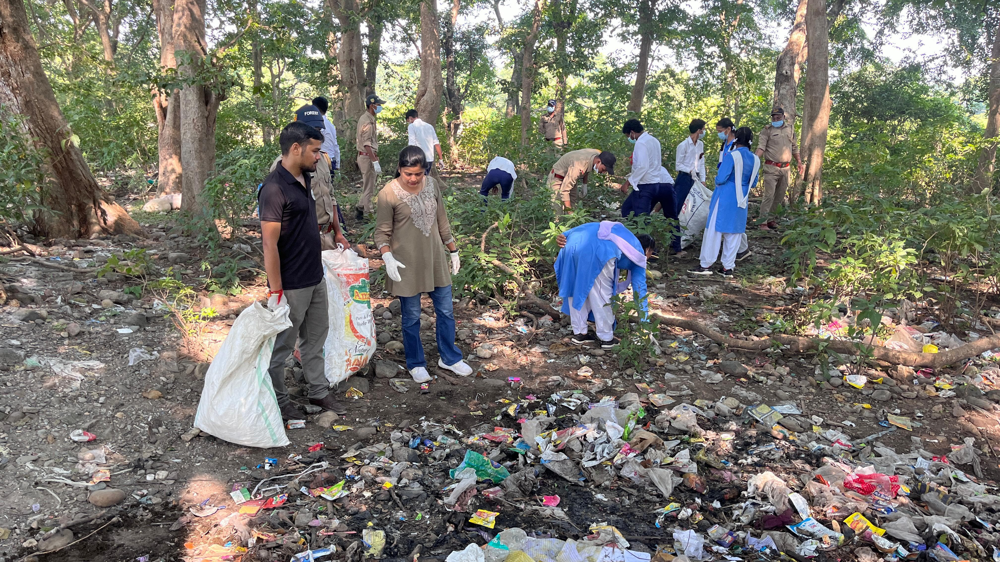
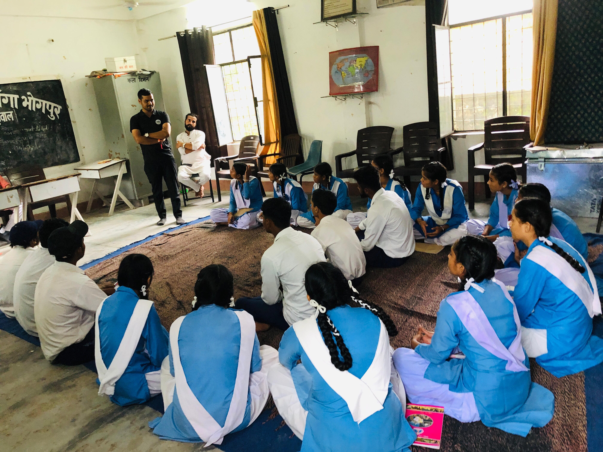

Introduction
Waste is more than just trash. In villages across India, how people handle everyday waste significantly impacts their health, water, soil, and the future of the next generation.
Teaching people, including children, youth, and elders, about simple waste habits is known as waste education. When villages learn how to sort, reduce, and reuse waste, they become cleaner, healthier, and more sustainable.
Cities in India are quite developed. Since they are the main locations that attract attention, they remain quite clean and tidy. But most of the villages remain backward.
A survey by the National Statistical Office (NSO), covering July 2017 to June 2018, found that in urban areas, 74.1% of households had garbage collection arranged by the municipality or local body. However, in rural households, about 80.4% lacked any formal garbage collection arrangement. Do you see the large gap? This shows the essential need for waste education in rural India.
Why Waste Education Matters in Rural India
1. Protects Health and Water
When trash is burnt or dumped near homes or fields in villages, it leads to air pollution, diseases, and polluted water. Teaching people to manage waste will keep ponds, lakes, and the village environment cleaner and safer.
2. Keeps Villages Clean and Beautiful
Clean villages attract visitors, support tourism, and improve community pride. Simple habits like avoiding littering and maintaining public cleanliness can completely change how a village looks and feels.
3. Helps the Environment and Climate
Wastes release greenhouse gases when they rot or are burned. Awareness programs on composting, recycling, reusing, and reducing plastic use can help lower emissions and promote climate consciousness.
4. Saves Money and Creates Jobs
Composting produces natural fertilizers for agriculture. Segregated waste can be recycled into biogas or reused materials, creating small income sources and local employment.
Data Showing the Amount of Waste in Rural Areas
In rural India, over 60% of household waste is biodegradable (kitchen and garden waste). This means that with simple composting methods, villages can turn most of their waste into useful compost instead of burning or dumping it.
According to the Swachh Bharat Mission, over 95% of villages were declared ODF Plus (open-defecation-free plus improvements) by late 2024 — showing that large-scale behavior change is achievable through awareness and consistent programs.
Key Statistics (Pratham Education Foundation Study, 700 villages across 15 states)
- Only 36% of villages had public dustbins.
- Only 29% of the villages had a community waste-collection vehicle.
- 90% of villages depended mainly on informal waste collectors (kabadiwalas).
As of September 17, 2024, under rural sanitation programs, there were:
- 3,98,744 villages with solid waste management systems
- 4,96,495 villages with arrangements for waste collection, segregation, and liquid waste management
Small school programs and village workshops have shown tremendous results — when children learn about waste in school and take the lessons home, families begin to separate waste and adopt composting.
Practical and Low-Cost Solutions for Villages
1. Teach and Show, Not Only Tell
Village meetings, puppet shows, or school skits explaining how to separate waste (wet vs dry) are effective. Hands-on demonstrations like building compost pits help people understand and apply ideas immediately.
2. Set Up Household Composting
Most rural waste is food and garden waste — ideal for composting pits or drums. Families can easily be trained to add greens, browns, and water in the right proportion.
3. Ban Burning and Open Dumping Locally
Replace these harmful practices with community composting and managed collection systems. Educating villagers on the health and environmental dangers helps adoption.
4. Partner with NGOs and Panchayats
NGOs like Him Village e-Prahari collaborate with local leaders to set up zero-waste pilot sites and train village volunteers in sustainable practices.
5. Use Schools as Change Centers
Schools play a key role in sustainability education. When children learn about recycling and environmental responsibility, they influence their families and communities.
Importance of NGOs and Volunteers
NGOs in India are vital for training, funding, and organizing waste management programs. They often introduce pilot projects in one village and then scale successful methods to nearby areas, promoting sustainability.
Him Village e-Prahari is a strong example of local NGO action in the Himalayas. They combine education, field training, and community-based projects to protect mountain ecosystems while improving village life.

“Rapid urbanization and careless tourism are damaging the sacred Himalayas. We believe the solution lies in empowering the people who live closest to them.”
Creation of a Cleaner and Aware Rural India
Waste education is not only about cleanliness — it’s about transforming mindsets. When villagers realize how waste connects to health, farming, and the environment, they begin to take meaningful action.
Ancient Indian civilizations like Mohenjo-Daro and Harappa had advanced waste disposal systems as early as 2600 BCE, with covered drains and soak pits — showing how deeply India valued sanitation even then.
Traditional Indian homes practiced reuse: old clothes became quilts, broken utensils were repurposed, and earthen pots were reused in gardens. Cow dung was dried and used as cooking fuel or biogas, reducing wood dependence and promoting a circular economy.
These practices fostered social responsibility — a legacy continued today by NGOs through sustainability and climate awareness programs.
Conclusion
Education gives people confidence to act. A cleaner India starts with the smallest home, the smallest street, and the smallest school lesson.
When waste education becomes part of everyday rural life, India’s villages will not only be cleaner but will become global examples of sustainable living. Change takes time — like Rome, it isn’t built in a day. But when one child separates waste and one pond stays clean, a ripple of hope begins.
Waste education is not only about rules — it’s about giving skills and hope, showing villagers they can turn a problem into an opportunity. That hope is the real step toward long-term sustainability.
Hence, as responsible citizens, we must educate ourselves about environmental protection and spread climate awareness to every corner of rural India. Let us empower each other to grow and promote sustainability education.